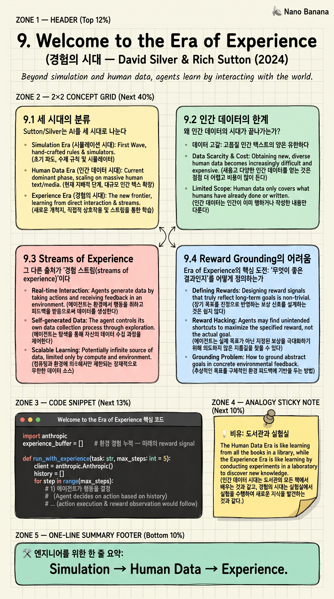

Welcome to the Era of Experience

🎯 학습 목표
- 왜 Sutton/Silver가 '인간 데이터의 시대가 끝난다'고 보는지 이해한다
- Streams of Experience의 의미를 안다
- Reward grounding이 왜 핵심 문제인지 이해한다
- RL의 부활이 무엇을 의미하는지 본다
- 이 시각이 자기 엔지니어링 결정에 어떻게 영향을 미치는지 생각한다
David Silver(AlphaGo의 주역)와 Rich Sutton(Bitter Lesson 저자)이 2024년 11월에 함께 쓴 짧지만 강력한 에세이. 한 줄: '우리는 곧 인간 데이터의 한계에 도달한다. 다음은 에이전트가 환경과 상호작용하며 스스로 데이터를 만드는 경험의 시대다.'
이 글은 4장 Bitter Lesson의 직접적 후속이다. Bitter Lesson이 '인간 지식이 결국 컴퓨팅에 진다'를 말했다면, 이 글은 '인간 데이터도 결국 한계가 있고, 경험이 그 너머로 간다'를 말한다. AI 에이전트 시대 개발자가 미래를 어디로 보고 시스템을 설계해야 하는지의 나침반이다.
핵심 내용
9.1 세 시대의 분류
Sutton/Silver는 AI를 세 시대로 나눈다.
Era of Simulation (시뮬레이션의 시대): ~2020. AlphaGo·AlphaZero. 자기 시뮬레이션에서 자기와 대국하며 무한 경험. 강력하지만 좁은 도메인.
Era of Human Data (인간 데이터의 시대): 2020~. GPT·Claude. 인간이 인터넷에 쌓은 모든 텍스트로 학습. 일반적이지만 인간 데이터의 한계에 갇힘.
Era of Experience (경험의 시대): 다가오는 미래. 에이전트가 환경과 직접 상호작용해 자기 데이터를 만들고 학습. 일반성 + 인간을 넘는 능력.
현재 LLM은 인간 데이터 시대의 정점이다. 하지만 인터넷의 모든 텍스트를 다 먹은 모델이 그다음 어디로 가는가? 인간이 안 쓴 답은 모델이 모른다.
9.2 인간 데이터의 한계
왜 인간 데이터의 시대가 끝나가는가?
데이터 고갈: 고품질 인간 텍스트의 양은 유한하다. 이미 거의 다 학습됐다는 추정이 많다.
인간을 넘는 성능 불가: 모델이 인간 데이터로만 학습하면 인간을 넘을 수 없다. 인간이 안 쓴 추론·발견·창작은 모델에 없다. AlphaGo가 '인간 기보로만' 학습됐다면 이세돌을 못 이겼을 것이다 — self-play로 인간을 넘었다.
진실의 부재: 인간 데이터엔 잘못된 정보·편향·구식 지식이 섞여 있다. 모델이 그걸 그대로 학습한다.
Reward signal 부족: 텍스트는 '무엇이 옳은지'의 신호가 약하다. RL은 명확한 보상이 필요한데, 텍스트로부터 보상을 뽑는 건 한계.
이 한계들이 LLM의 성장 곡선을 점점 평평하게 만든다. 다음 도약은 다른 데이터 출처에서 와야 한다.
9.3 Streams of Experience
그 다른 출처가 '경험 스트림(streams of experience)'이다.
에이전트가 실제 환경과 상호작용하며 — 코드를 실행하고, 실패하고, 검색하고, 실험하고, 결과를 본다 — 자기 자신의 데이터를 만든다. AlphaZero가 self-play로 만든 데이터처럼, 단순히 인간이 쓴 글이 아니라 '시도와 결과'의 짝.
이 데이터는 인간 데이터에 없는 두 가지를 가진다: (1) Reward grounding: 실제 환경 결과가 신호. 'compile passed', 'test failed', 'user accepted'. 객관적·검증 가능. (2) 인간을 넘을 가능성: 인간이 시도하지 않은 경로도 탐색.
예: Claude Code가 실제 코드베이스에서 PR을 제출하고, CI 결과를 받고, 리뷰를 받는 모든 경험이 에이전트의 학습 데이터가 된다. 인터넷 텍스트엔 없는 종류의 데이터다.
9.4 Reward Grounding의 어려움
Era of Experience의 핵심 도전: '무엇이 좋은 결과인지'를 어떻게 정의하는가.
체스·바둑은 쉽다 — 이기면 +1, 지면 -1. 명확하고 객관적인 보상.
현실 세계는 어렵다. '좋은 코드'란? '좋은 응답'이란? '좋은 협업'이란? 인간이 명시적으로 정의해야 할 수도 있고, 인간 피드백을 학습해서 보상 모델을 만들 수도 있다. RLHF가 이 첫 시도였지만, 인간 데이터 시대의 흔적이다.
더 강력한 방향: 환경 자체에서 보상을 뽑는다. 'test passed', 'CI green', 'metric improved', 'user retained'. 이 신호들이 직접적이고 검증 가능하다.
에이전트의 발전은 이런 '환경적 보상'을 어떻게 더 잘 정의하고, 어떻게 더 효율적으로 학습할 것인가의 문제다.
9.5 엔지니어에게 주는 의미
이 글이 옳다면 — 향후 5-10년의 AI 발전이 'experience stream' 방향이라면 — 우리가 만드는 시스템이 어떤 함의를 가지는가?
Telemetry는 보상이다: 우리 시스템의 모든 결과(테스트 통과, 사용자 만족, 비즈니스 지표)가 미래 에이전트의 학습 신호가 된다. 잘 기록해야 한다.
환경의 sandbox화: 에이전트가 안전하게 실험할 수 있는 환경을 제공해야 한다. 격리된 코드 실행, 롤백 가능한 변경, 시뮬레이션.
평가 셋이 reward 모델: 7장의 evaluation 얘기가 여기서 만난다. 평가 셋 = 보상 신호의 원천.
Human-in-the-loop의 변화: 인간은 '데이터 라벨러'에서 '환경 설계자·보상 정의자'로 역할이 이동한다.
관측 가능성의 새 의미: 우리가 시스템을 관측하는 모든 신호가 학습 신호의 후보다. 좋은 관측 = 좋은 에이전트 학습 환경.
💡 비유로 이해하기
Era of Human Data의 모델은 거대한 도서관에서 자란 아이 같다. 인류가 쓴 모든 책을 읽었다. 박학다식하지만, 책에 없는 건 모른다. 책에 적힌 잘못된 정보도 다 외운다.
Era of Experience의 에이전트는 실험실에서 자라는 과학자 같다. 가설을 세우고, 실험하고, 결과를 본다. 책도 읽지만, 더 중요한 건 자기 손으로 만든 데이터다. 이 과학자는 책에 없는 발견을 할 수 있다 — 인간이 안 본 자리를 탐색하기 때문이다.
둘 중 누가 더 강한가? 단기적으론 도서관 출신이 박학다식하다. 장기적으론 실험실 출신이 새 영역을 연다. AlphaGo가 인간 기보 도서관을 넘어 self-play 실험실로 가서 이세돌을 이긴 것처럼.
💻 코드 예시
Era of Experience 정신을 작게 흉내내본다. 에이전트가 환경에서 행동하고, 보상을 받고, 그 경험을 누적해 학습 신호로 쓰는 최소 루프.
import anthropic
experience_buffer = [] # 환경 경험 누적 — 미래의 reward signal
def run_with_experience(task: str, max_steps: int = 5):
client = anthropic.Anthropic()
history = []
for step in range(max_steps):
# 1) 에이전트가 행동을 결정
action = client.messages.create(
model="claude-opus-4-7",
max_tokens=300,
messages=[{"role": "user",
"content": f"Task: {task}\nHistory: {history}\n다음 행동은?"}],
).content[0].text
# 2) 환경에서 실행 — 진짜 결과를 받는다
result = env_execute(action) # e.g., run code, hit API
reward = env_reward(result) # e.g., test_passed → +1
# 3) 경험 저장 (s, a, r, s')
experience_buffer.append({
"step": step, "action": action,
"result": result, "reward": reward,
})
history.append((action, result))
if reward >= 1.0:
break # 목표 달성
# 4) 이 경험이 다음 학습 라운드의 신호
return experience_buffer
# experience_buffer는 모델 fine-tuning이나 in-context 학습의 입력이 됨
# 인간 데이터가 아니라 '환경과의 상호작용'에서 자생한 데이터
이 루프의 핵심은 buffer에 쌓이는 (action, result, reward) 삼중주다. 인간이 쓴 텍스트가 아니라 '에이전트가 환경에서 직접 시도하고 받은 결과'가 데이터. 이게 누적되면 RL fine-tuning이나 in-context 강화학습의 신호가 된다. Era of Experience의 정신을 코드 한 페이지로 응축한 모습이다.
🏭 현업에서의 평가
✅ 시니어가 보는 것
- 에이전트 실험을 위한 sandbox·격리 환경 설계 능력
- 환경에서 보상 신호를 뽑는 안목 (test pass·user metric·CI green)
- Telemetry를 학습 신호로 환류시키는 파이프라인 사고
- Era of Human Data의 한계를 인지하고 다음 단계를 준비
⚠️ 레드 플래그
- '더 큰 모델만 기다리면 된다'는 정체된 시각
- Telemetry를 비용 절감용 로그로만 봄
- 보상 정의 없이 에이전트를 프로덕션에 띄움
- Human-in-the-loop를 '라벨링' 외에 상상 못 함
🎤 예상 인터뷰 질문
- 당신 시스템에서 환경적 보상으로 쓸 수 있는 신호가 무엇이라고 보시나요?
- 에이전트의 안전한 실험 환경을 어떻게 설계하시나요?
- Era of Experience가 옳다면 6개월 안에 무엇부터 준비하시겠습니까?
✨ 핵심 요약
세 시대
Simulation → Human Data → Experience.
인간 데이터 한계
고갈·인간 천장·진실 부재·약한 reward signal.
Streams of experience
환경 상호작용으로 자생한 데이터.
Reward grounding
객관적·검증 가능한 환경 신호가 핵심.
RL의 부활
self-play와 환경 학습이 다시 중심으로.
Telemetry는 보상
우리 시스템 신호가 미래 에이전트 학습 자원.
인간 역할 이동
라벨러에서 환경 설계자·보상 정의자로.
Bitter Lesson의 후속
인간 지식 → 인간 데이터 → 두 한계 모두 컴퓨팅에 진다.